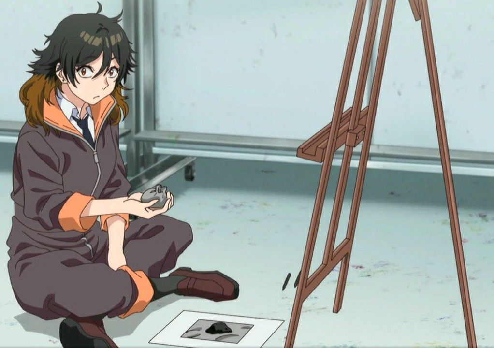

codename: Oliveirinha

>Desenha um olho perfeito sem luz
>Não elabora
>mfw
Factos engraçados sobre ela I suppose:
Weebery favorita:
Ya não dava para fazer isto porque não sei quais são, se me disseres eu atualizo rapidamente.
Fui ver o teu MAL e descobri que:
- Tens bom gosto, tens bué animes da studio ghibli com 10
- Tens o Fushi nas favorite characters 👉👈 (Kurisu Best Waifu btw)